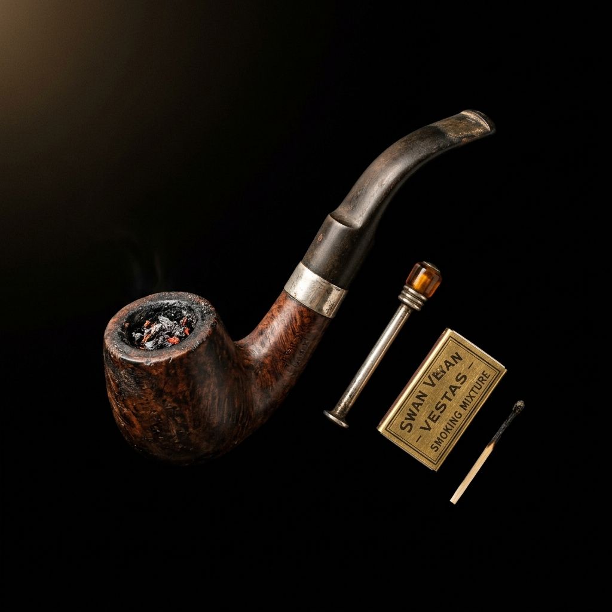
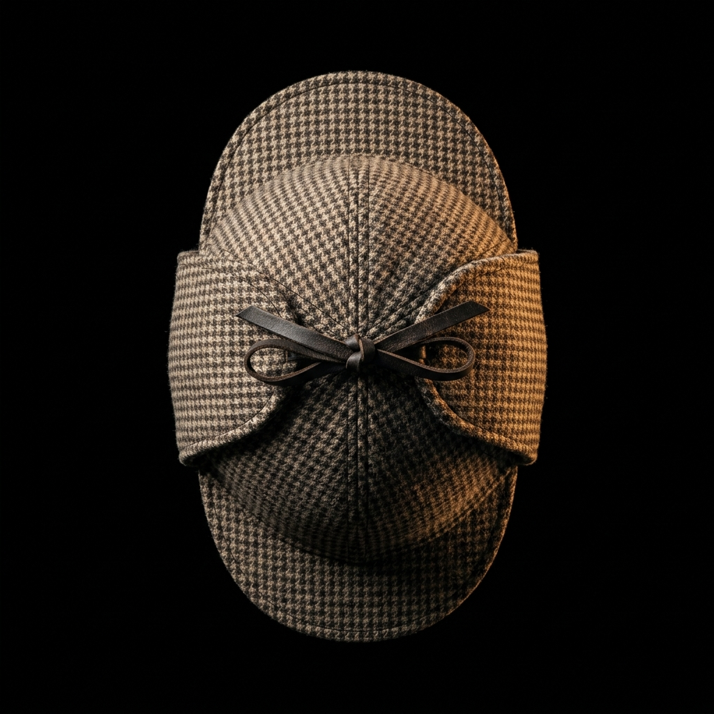
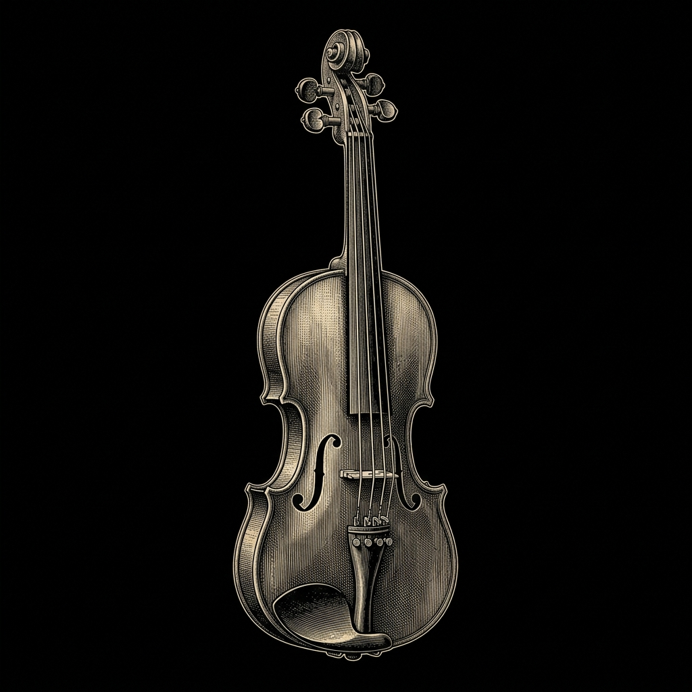
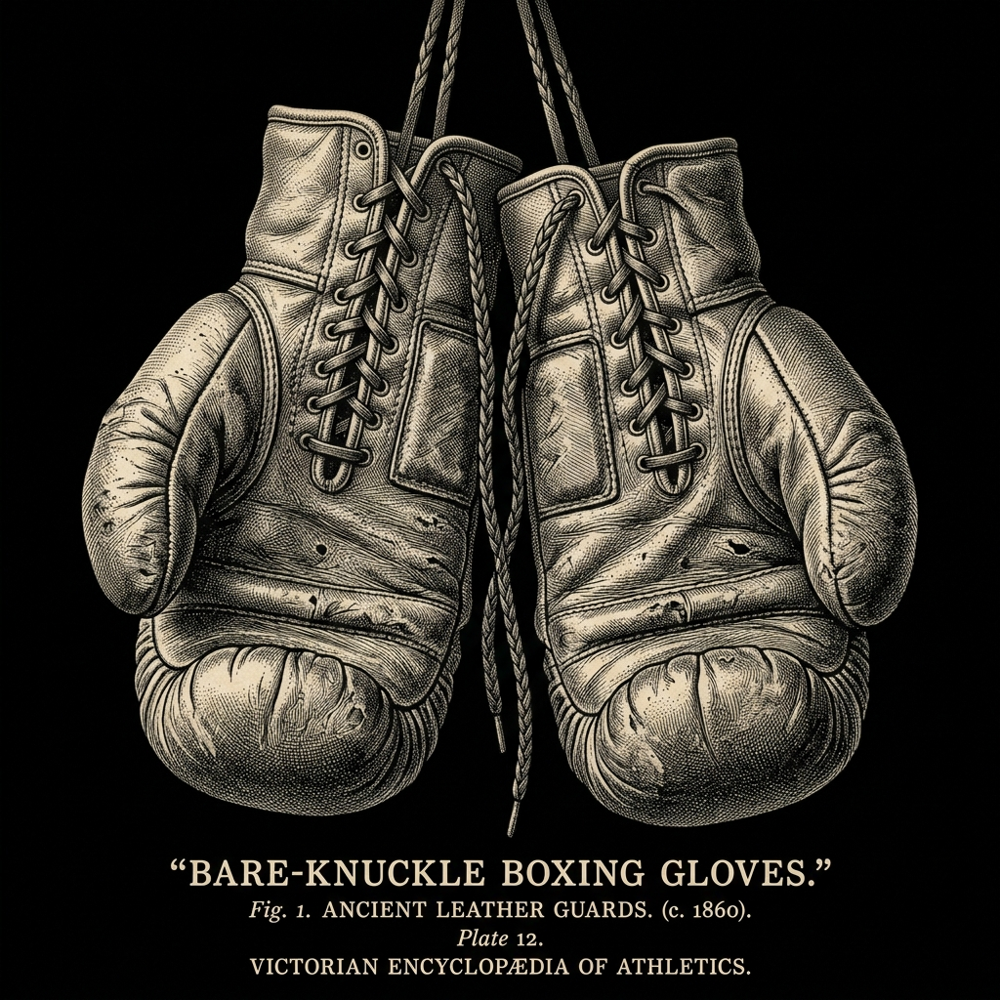
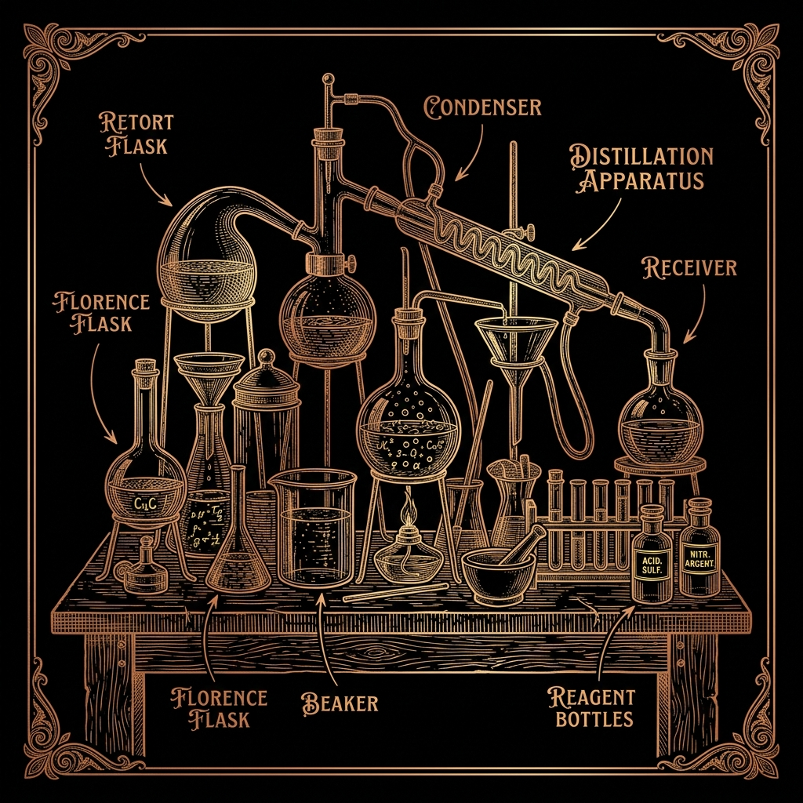
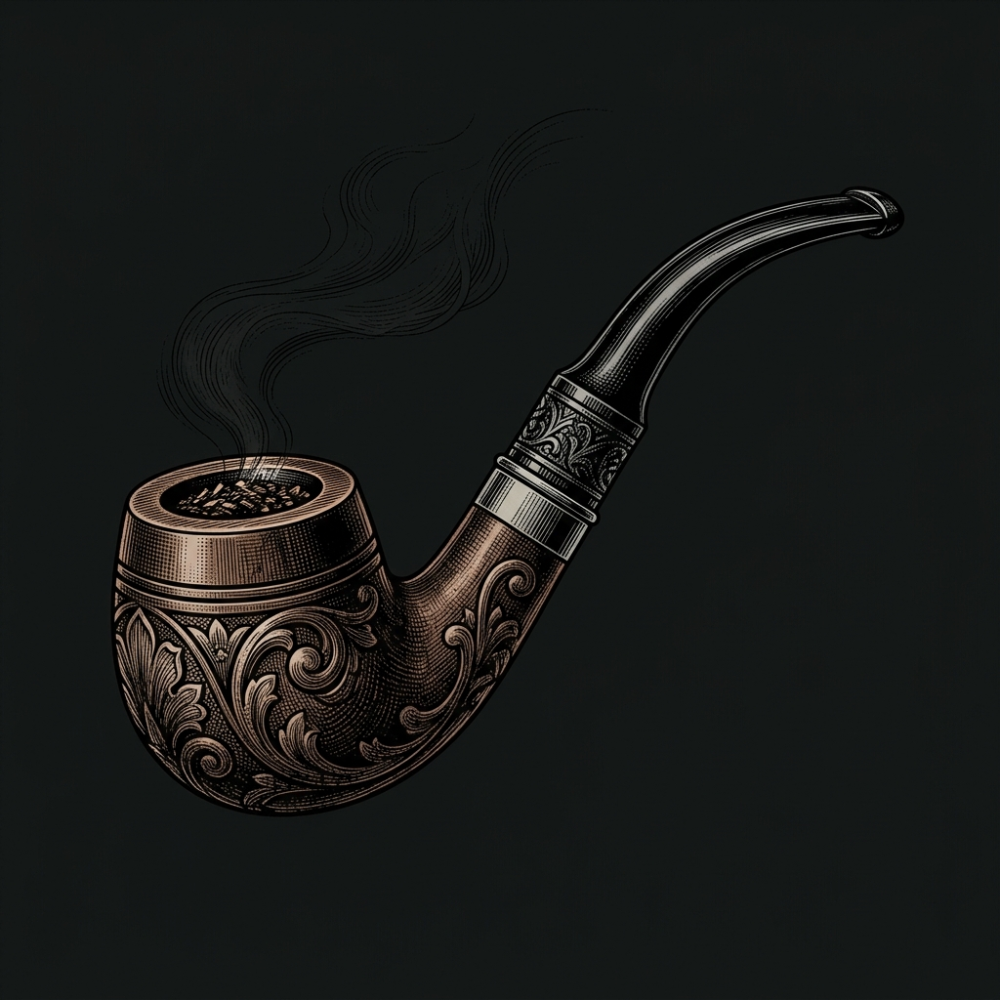
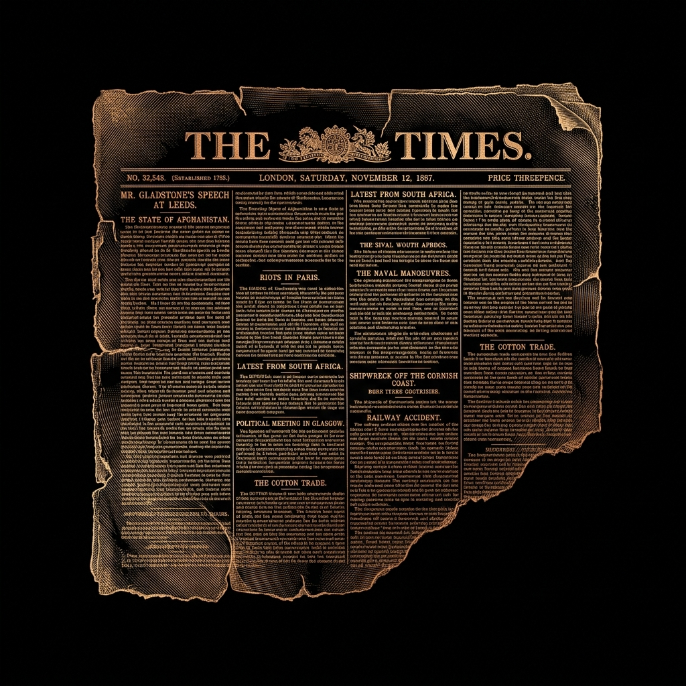
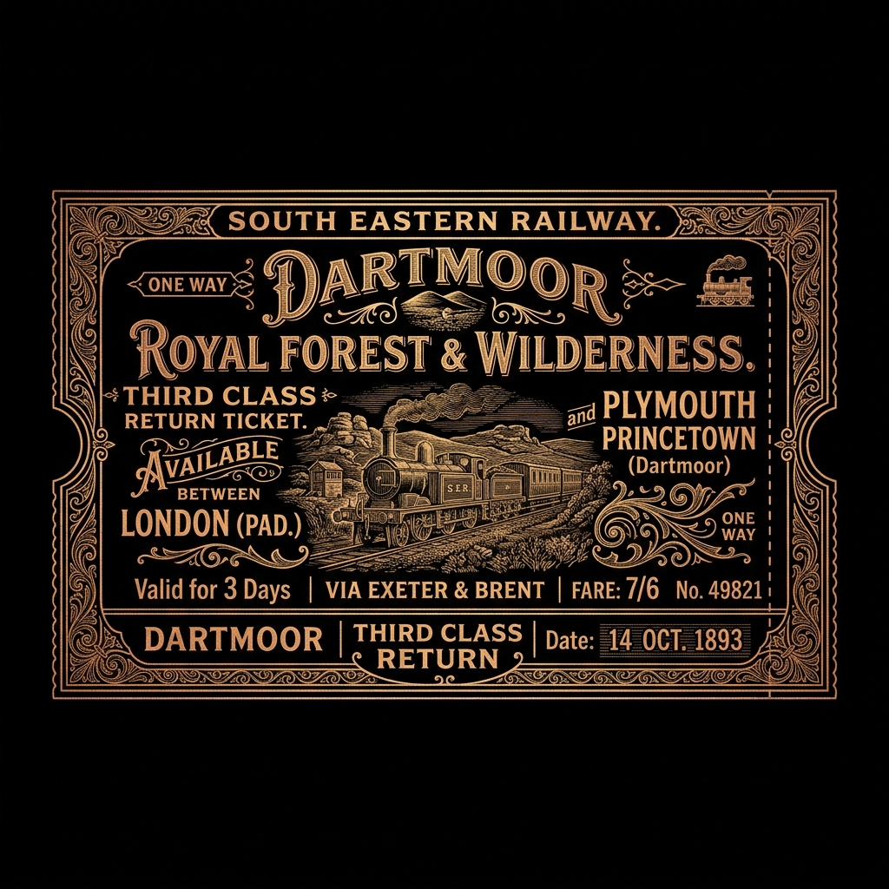

SHERLOCK
HOLMES
КОНСУЛЬТИРУЮЩИЙ ДЕТЕКТИВ
Когда полиция заходит в тупик —
я начинаю расследование.
v
"Часть из них он так и не разрешил опубликовать..." - Дж. В.
АРХИВ ДЕЛ
ДЕЛО #001
СОБАКА БАСКЕРВИЛЕЙ
Семейная тайна, необъяснимые события, подозрительная смерть.
РАСКРЫТО
ДЕЛО #002
ГОЛУБОЙ КАРБУНКУЛ
Исчезновение бесценного драгоценного камня.
РАСКРЫТО
ДЕЛО #003
ПЕСТРАЯ ЛЕНТА
Загадочная смерть в закрытой комнате загородного дома.
РАСКРЫТО

МЕТОД ХОЛМСА
НАБЛЮДЕНИЕ
Я вижу то, чего не замечают другие.
СБОР ФАКТОВ
Каждая деталь имеет значение.
АНАЛИЗ
Факты должны быть связаны между собой.
ДЕДУКЦИЯ
Из множества деталей появляется единая картина.
РЕШЕНИЕ
Дело закрыто.

"Самый странный сосед на моей памяти"
СПЕЦИАЛИЗАЦИЯ
РОЗЫСК ПРОПАВШИХ
Люди, документы, ценности.
РАССЛЕДОВАНИЕ ПРЕСТУПЛЕНИЙ
Восстановление последовательности событий.
АНАЛИЗ УЛИК
Следы обуви, почерк, пепел.
РАЗОБЛАЧЕНИЕ ЛЖИ
Несостыковки в показаниях.
ВНЕ РАССЛЕДОВАНИЙ

СКРИПКА
Музыка

БОКС
Дисциплина

ХИМИЯ
Эксперименты

ТРУБКА
Размышления


ОТЗЫВЫ
«Блестящий ум. Иногда невыносимый характер.»
«К сожалению, снова оказался прав. Его методы непостижимы.»
«Только пусть перестанет превращать гостиную в химическую лабораторию и стрелять в стену.»
ТЕКУЩИЕ ДЕЛА
ДЕЛО #047
В ПРОЦЕССЕ
Исчезновение лондонского наследника.
ДЕЛО #048
НА АНАЛИЗЕ
Письмо без отправителя и криптограмма.
SH
ДЕЛО #049
КОНФИДЕНЦИАЛЬНО
Человек, которого никто не видел.